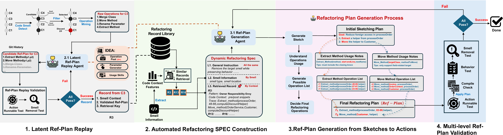
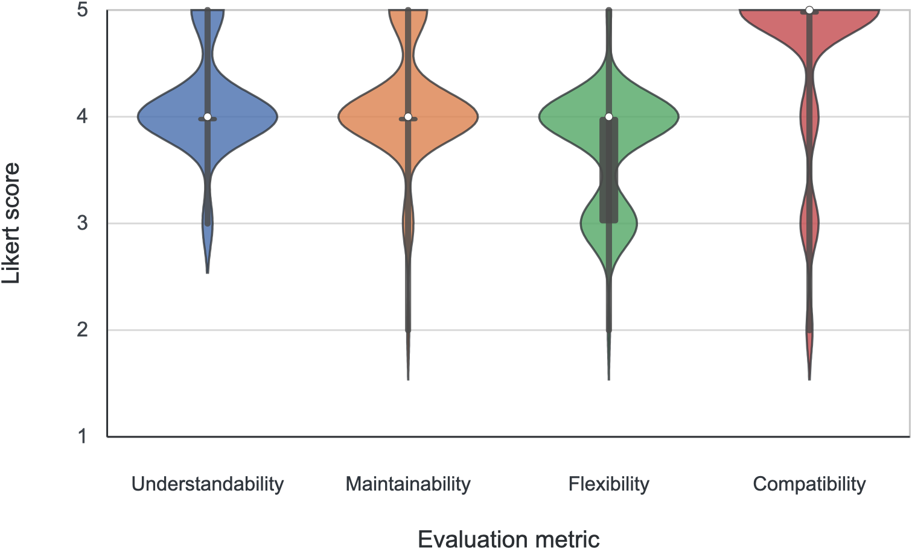

Historical Ref-Plan replay
Recover candidate operations from real smell-removal commits, replay them, and retain records that are both executable and smell-eliminating.
ICSE 2027 paper project
Historical refactoring replay and sketch-driven navigation for repository-level code smell refactoring.
Paper introduction
Large language models can propose plausible refactoring directions, but repository-level code smell refactoring requires coordinated edits that preserve global behavior. AutoRefactor uses an executable Refactoring Plan (Ref-Plan) as an intermediate representation, combining IDE-native refactoring operations with AST-based edits.
The system mines real smell-removal history, replays candidate Ref-Plans to keep only executable and effective examples, builds a task-level Refactoring SPEC for new instances, and validates each generated plan with executability, compilation, testing, and smell elimination checks.
Approach
AutoRefactor turns developer refactoring history into reusable operation-level experience and applies that experience through a structured, checkable generation pipeline.

Recover candidate operations from real smell-removal commits, replay them, and retain records that are both executable and smell-eliminating.
Retrieve similar historical records and combine them with the current smell location, involved entities, constraints, and goals.
Generate a high-level refactoring sketch first, then bind it to concrete IDE and AST operations with explicit parameters.
Accept only plans that pass operation prechecks, compilation, tests, and smell-removal validation; use feedback to repair plans.
Evaluation
AutoRefactor was evaluated on 691 instances from 12 open-source Java projects and 9 code smell types. The evaluation compares specialized refactoring tools, a general coding-agent baseline, and ablated AutoRefactor variants.

Case study
The target is Apache Commons Compress
Segment.buildClassFile(int). The method repeatedly
accesses ClassBands, but it also coordinates class-file
assembly, constant-pool entries, source attributes, header defaults,
fields, interfaces, and bytecode metadata. A safe fix therefore
needs more than a direct move-method decision.
A baseline tool can identify and apply a plausible move-method change for this case, yet the resulting patch still fails validation. The example illustrates why AutoRefactor treats refactoring as a planned, checked repository-level change rather than a single candidate transformation.
private ClassFile buildClassFile(final int classNum) {
final ClassFile classFile = new ClassFile();
final int[] major = classBands.getClassVersionMajor();
final int[] minor = classBands.getClassVersionMinor();
if (major != null) {
classFile.major = major[classNum];
classFile.minor = minor[classNum];
} else {
classFile.major = header.getDefaultClassMajorVersion();
classFile.minor = header.getDefaultClassMinorVersion();
}
final ClassConstantPool cp = classFile.pool;
final int fullNameIndexInCpClass = classBands.getClassThisInts()[classNum];
final String fullName = cpBands.getCpClass()[fullNameIndexInCpClass];
final List<Attribute> classAttributes =
classBands.getClassAttributes()[classNum];
// Interfaces, fields, methods, and class attributes are assembled here.
}| Tool or run | Outcome | Validation summary | Reader takeaway |
|---|---|---|---|
| AutoRefactor GLM-4.7 / GPT-5 / GLM-4.5-Air / DeepSeek-V4-Flash | 4/4 Passed | All four model backends generate executable Ref-Plans and pass compilation, tests, and smell-elimination validation. | This case is not repaired by a one-off model response; it is consistently solved through a structured plan-execute-validate workflow. |
| MM-Assist | Rejected | A move-method patch is applied, but it fails validation. | Finding a candidate is not enough if the final patch is not safe. |
| FETruth | Not applicable | The matched target cannot be applied as an IDE refactoring. | A reported target still needs an executable transformation. |
| SWE-agent | Build failed | The edited repository does not pass the build check. | General-purpose editing struggles with this coordinated refactoring. |
| JDeodorant | No candidate | No applicable move-method candidate is produced. | Traditional candidate generation may miss this case entirely. |
This case shows why AutoRefactor validates a concrete refactoring plan against the repository instead of relying only on a local move-method suggestion.
Read brief case studyDemonstration
The demo shows AutoRefactor moving from smell context to sketch, Ref-Plan generation, and validation inside the development environment.
Artifacts
Downloadable artifacts for the AutoRefactor experiments, grouped by dataset, project snapshots, results, and the artifact README.
Fixed Java smell dataset with 691 instances across 9 smell categories and source tables.
ProjectsSource snapshots of the 12 Java projects referenced by the dataset, plus local dependencies.
ResultsAgent, classic-tool, model-analysis, and human-evaluation result snapshots used in the paper.
GuideDirectory layout, included contents, exclusions, and local verification instructions.